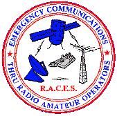

Radio Amateur Civil Emergency Service
|  | |
| Abbreviation | RACES |
|---|---|
| Formation | 1952 |
| Purpose | Emergency communications |
Region served | United States |
{kind=link}
The Radio Amateur Civil Emergency Service (RACES) is an emergency radio service authorized in Part 97.407 of the Federal Communications Commission (FCC) rules and regulations governing amateur radio in the United States.[1]
The concept of a standby "Radio Amateur Civil Emergency Service" to replace the conventional "Amateur Radio Service" during wartime was developed in 1952 as result of input from the American Radio Relay League and the Department of the Army's Office of Civil Defense. During World War II, the Amateur Radio Service had been silenced and a new War Emergency Radio Service (WERS) had to be created from scratch in a process that took six months.
The resulting standby RACES service was designed to provide a quicker and smoother transition in the event the President ever needed to silence the regular Amateur Radio Service again when invoking the War Powers Act of 1941. Despite many wars involving the United States since the enactment of the rules on August 15, 1952[2], this has never happened.
Enrollment
FCC licensed amateur radio operators may choose to enroll in RACES in order to provide emergency communications supporting the state, county and local emergency management agencies. The operator registers their amateur radio license and their station with the appropriate emergency management official and may receive credentials according to the emergency management agency's policies.
Activation
RACES stations are only activated by the state, county or local emergency management authority to operate on their behalf. Only amateur radio stations who have previously registered with state and local governments to provide emergency radio communications for them in times of emergency can be activated. Other amateur radio operations might be suspended and operations under the RACES rules might be restricted to certain frequencies within the amateur radio bands.
If amateur radio operators, registered as RACES stations, regularly conduct on air training but not at the request or direction of the emergency management official, then those stations are operating in the amateur radio service and not RACES.
In addition to wartime communications, operations under the RACES rules can provide or supplement communications during emergencies where normal communication systems have sustained damage. It may be used in a wide variety of situations, including natural disasters, technological disasters, nuclear accidents, nuclear attack, terrorist incidents, and bomb threats.
Participation
In the past, actual RACES station licenses were also issued to civil defense organizations. To prevent abuse of station licenses by officials who were not licensed amateur radio operators, limitations on the duration of non-emergency operation and stations that might be contacted were incorporated into part 97.407. Such RACES station licenses are no longer issued, and any operations under the RACES rules would now use licensed amateur radio operators as control operators.
In daily practice, most amateur radio operators enrolled with their local government for possible operations under the RACES rules are also members of the Amateur Radio Emergency Service, organized by the American Radio Relay League. ARES provides emergency communications in the conventional Amateur Radio Service without the need for an emergency declaration from the government or direction from the emergency management official.
See also
- Amateur Radio Emergency Communications
- Amateur Radio Emergency Service
- Emergency management
- Military Auxiliary Radio System
- NetHope
- RAYNET in the United Kingdom.
- Salvation Army Team Emergency Radio Network, SATERN, US
- Skywarn
References
- ^ "Part 97: Amateur Radio Service". From American Radio Relay League web site. Retrieved Feb. 15, 2008.
- ^ https://docs.fcc.gov/public/attachments/DOC-308672A1.pdf#page=100
External links
- State/Local Guidance from FEMA. RACES is mentioned in the plan (issued after the CPG 1-15 document). This document is obsolete and has been absorbed into the Comprehensive Preparedness Guide 101, currently on Version 3.0 (September 2021)
- An interpretation of FEMA document CPG 1-15. This document is referenced by the SLG document from FEMA.
- ARRL ARES manual (2015). See chapter 2. It answers the question, "Is RACES an organization?".
- CPG 1-15 and CPG 101 are both obsolete and have been absorbed into the Comprehensive Preparedness Guide 101, currently on Version 3.0 (September 2021).